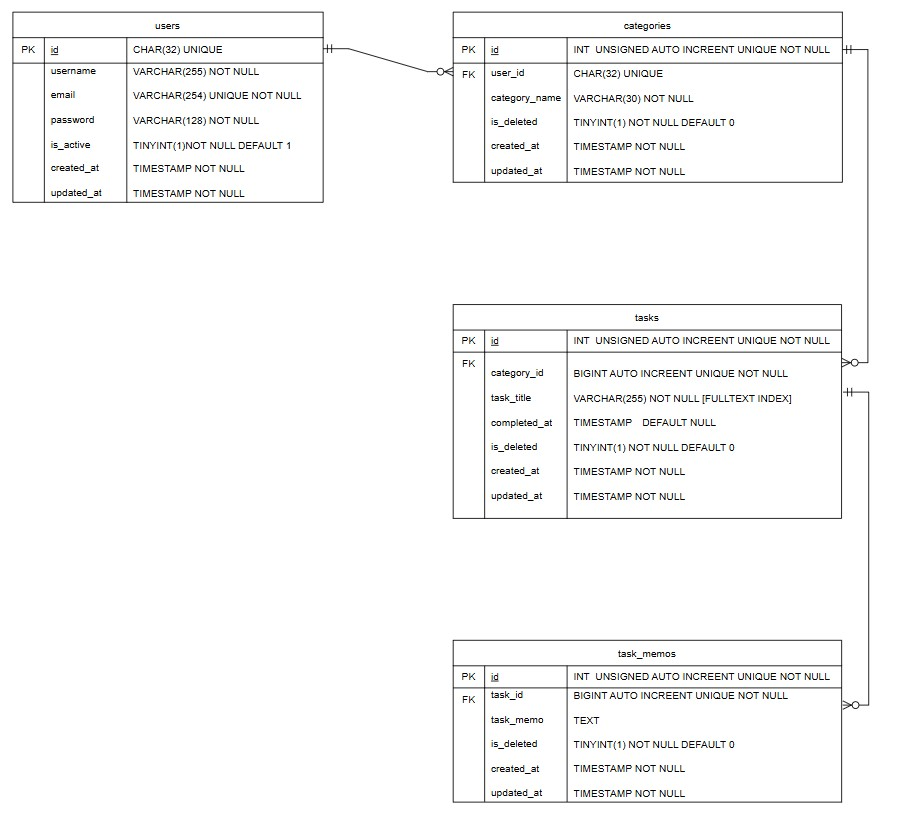

todo_app
~~
【概要】
- タスク・メモをカテゴリごとに管理するシンプルなtodoアプリ
- 基礎的なCRUD処理や非同期処理の理解とWeb3層構造のデプロイ検証が目的
- ハッカソンで見つかった技術的課題に対するキャッチアップと技術検証に利用
【主な機能】
＜基本機能＞
- 認証機能（新規登録・ログイン・ログアウト）
- カテゴリ作成・変更・削除機能
- タスク・メモ作成・変更・削除機能
【制作期間】
2ヶ月（2025年11~12月）
【技術スタック】
-
Frontend


-
Backend


-
Database

-
Infra


【アーキテクチャ】
-
ER図

-
インフラ構成図

【意識した点】
- 実装経験の少なかったCRUD処理の理解と非同期処理
- Djangoの各層の責務に応じた処理の整理とHTTPステータスコードに応じたレスポンスの実装
- CSSデザイン設計を理解するためにSassを導入
- AWS（ALB,EC2,RDS）へのweb3層構造でのデプロイを自力で行うこと
- AWS（ALB,ECS on Fargate,RDS）へgithub actionsを利用したCI/CDでのデプロイの理解
【苦労した点】
- 非同期処理がネストする時の挙動の整合性をとること（JsonResponseの値の共通化、処理ごとに共通のレンダリングをすることで解決）
- DjangoコンテナとMySQLコンテナの起動タイミングの差異によるエラー対応
- Django settings.pyの分割やenvファイルの整合性の担保
- ALBのヘルスチェックの異常の解決
【課題】
- UIデザインの構築（Figmaの操作）
- envファイルを使った環境構築や開発・本番環境の分離
- コミットの粒度とコミットメッセージ・プルリクエストの内容の整理
- React,Next.jsなどのモダン技術やTailWind cssやTypeScriptなど未経験スキルの理解